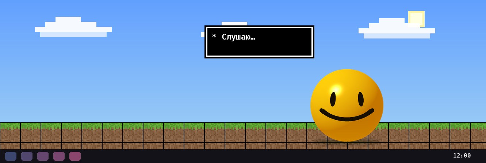
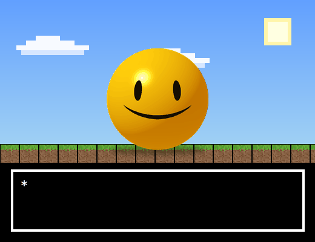
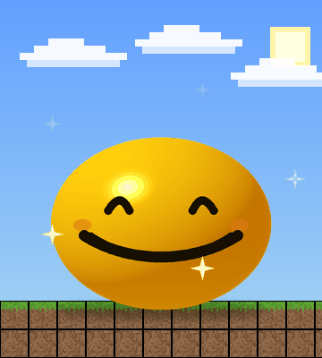
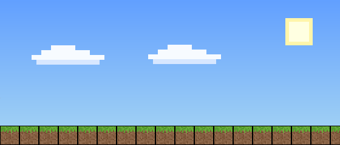

Что она умеет
Скажи «Верити», затем команду. Она слушает микрофон, понимает русский и отвечает бипами, как в Undertale, а текст печатается в окошке.
- Интернет
Открывает сайты, ищет в Google, картинки и информацию, пересказывает Википедию.
Верити, открой ютуб
- YouTube
Сразу включает первое видео по запросу или ищет прямо на YouTube.
- Музыка и видео
Пауза, следующий трек, «что играет», перемотка на нужную минуту.
Верити, поставь на 3:14
- Telegram
Находит чат, печатает сообщение и отправляет.
Верити, открой телеграм, чат папа, напиши привет
- Программы и окна
Открывает и закрывает программы, сворачивает окна, прокручивает страницы.
- Клавиши
Нажимает сочетания клавиш по названию.
Верити, нажми вин таб
- Файлы
Открывает папки и диски, создаёт папки, текстовые файлы, документы и таблицы.
- Компьютер
Громкость, яркость, диагностика ПК, скриншот, блокировка.
Верити, что грузит компьютер
- Разговор
Локальная нейросеть с характером весёлого смайла. Без интернета и ключей.
- Сама по себе
Меняет позы, катится по панели задач, прыгает, пока отвечает, и иногда появляется сама.
Установка
Поставь Python 3.13
Скачай установщик для Windows (64-bit). Подойдут и 3.11–3.14.
Поставь галочку «Add python.exe to PATH». Если Python уже есть, пропусти шаг.
Скачай Верити
Нажми кнопку, браузер сохранит ZIP.
Архив скачан, ищи его в «Загрузках».
Распакуй и запусти setup.bat
Распакуй в папку, например
C:\Verity, и запустиsetup.bat. Дождись надписи «Готово».Если Windows пишет «защитила ваш компьютер», нажми «Подробнее», затем «Выполнить в любом случае». В пути лучше без русских букв.
Запусти run.bat и скажи «Верити, открой ютуб»
Верити прикатится, поздоровается, а в трее появится её значок. Разреши доступ к микрофону.
Как научить Верити болтать
Нужна Ollama, бесплатная программа, которая запускает нейросеть на твоём компьютере. Запусти setup_ai.bat, затем перезапусти Верити.
Про звук речи
Верити не синтезирует голос: на каждую букву она издаёт короткий «бип», как герои Undertale, а текст печатается в окошке. Высоту бипов меняет параметр blip_pitch в config.json.
Как она выглядит
Живёт поверх окон, говорит в окошке как в Undertale и умеет катиться.



